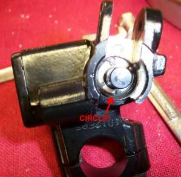
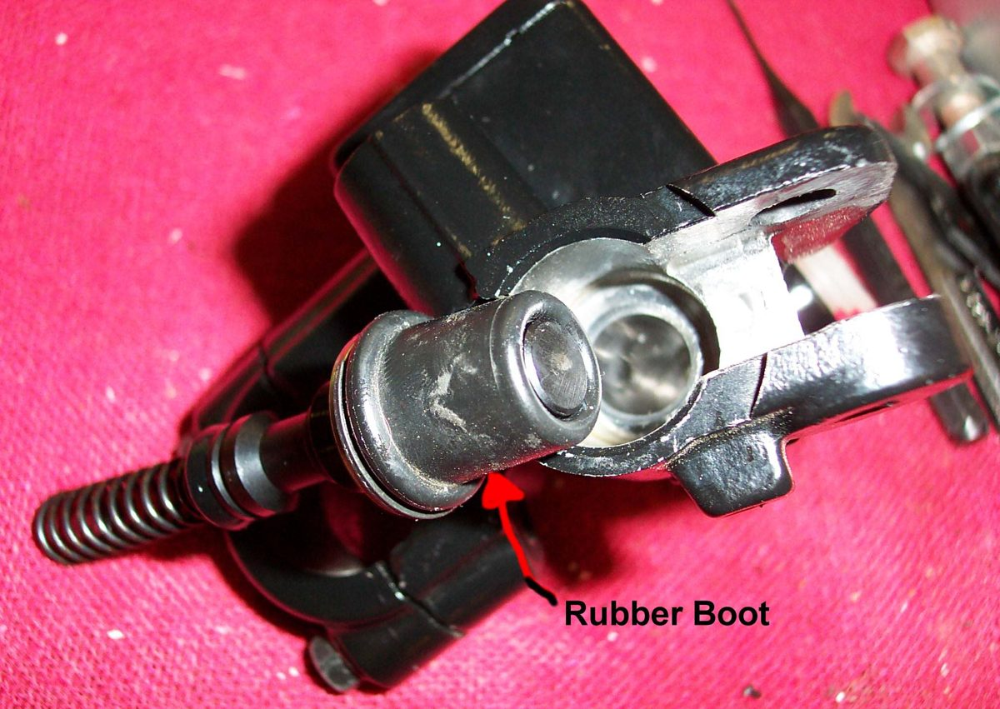

You squeeze the brake lever and it touches the grip with little or no braking. This is a brake failure. On a hydraulic brake it means fluid has gone, air or vapour is in the system, the master cylinder cannot hold pressure, or the pads have been pushed far back. On a cable drum brake it means the cable is broken or slipped, or the shoes are worn out.
Is it safe to ride?
No. Stop now as safely as you can: close the throttle, use the other brake gently and change down to use engine braking. Push the bike or have it carried to a workshop.
Quick checks first
- Look at the front reservoir: is there fluid in it at all?
- Look for fluid on the wheel, fork leg, caliper or under the lever.
- Look at the lever pivot: is the lever broken or loose?
- Cable brake: is the cable still attached at both ends?
- Pump the lever several times: does any pressure come back?
Diagnose it step by step
1Is the brake hydraulic or cable?
- Cable or rod: go to step 7.
- Hydraulic: go to step 2.
2Is the reservoir empty or nearly empty, or is fluid leaking anywhere?
- Yes: find the leak with Check brake hoses and banjo bolts and go to Brake fluid is leaking. Air has entered; the repair must be followed by a full bleed.
- No: go to step 3.
3Does pumping the lever bring back a firm feel?
- Yes, quickly: the pads were pushed back. This happens after pad work, or when a bent disc or loose wheel bearing knocks the pistons back. Check Check a brake disc and Check wheel bearings.
- Yes, but stays soft: air or boiled fluid. Go to Brake lever or pedal feels spongy.
- No: go to step 4.
4Are the pads still there and above the limit?
- No: a missing or worn-out pad lets the piston travel too far. Check brake pad wear, then Replace disc brake pads.
- Yes: go to step 5.
5Did it happen after long or hard braking, and come back after cooling?
- Yes: the fluid boiled. Replace brake fluid and bleed the brakes, then read Brakes get weaker when hot.
- No: go to step 6.
6With no leak and good pads, does the lever sink slowly when held?
- Yes: the master cylinder is bypassing. Check the brake master cylinder. Workshop.
- No: have a workshop bleed and check the whole system, including any CBS or ABS unit.
7Cable brake: is the cable broken, slipped out of the arm, or very loose?
- Yes: replace or refit the cable and adjust. See A control cable is frayed or stiff.
- No: the shoes are worn or the cam has gone over centre. Adjust a drum brake; if the adjuster is at its end, Service a drum brake.
Causes, most likely first
| Cause | How to confirm | Fix |
|---|---|---|
| Fluid leak or empty reservoir | Wet fittings, low level | Check brake hoses and banjo bolts, then bleed |
| Air or boiled fluid | Soft, recent work or hot brakes | Replace brake fluid and bleed the brakes |
| Pads worn out or knocked back | Firm after pumping; thin pads | Replace disc brake pads |
| Broken or slipped cable (drum) | Cable loose or detached | Replace cable and Adjust a drum brake |
| Worn shoes or cam over centre (drum) | Adjuster at end of thread | Service a drum brake |
| Master cylinder bypassing | Lever sinks with no leak | Check the brake master cylinder |
Reference values (K-Light 125)
| Item | Value | Source |
|---|---|---|
| Front lever free play at the tip | 10 to 20 mm | K-Light 125 manual, PDF p. 61 |
| Pad service limit | 3 mm | K-Light 125 manual, PDF p. 66 |